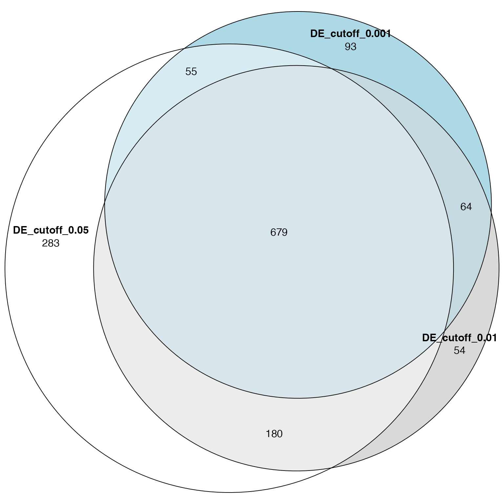
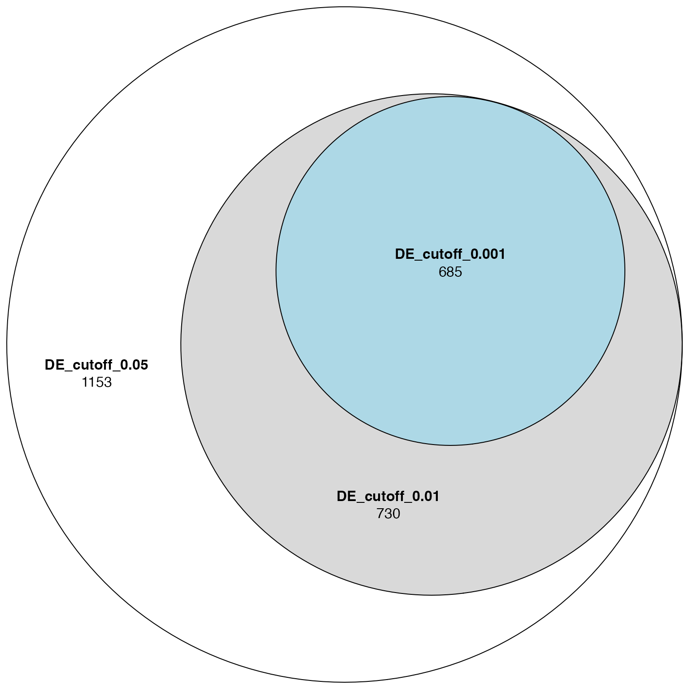

Topic 2-02: Implement ORA from scratch
Zuguang Gu z.gu@dkfz.de
2025-05-30
Source:vignettes/topic2_02_implement_ora.Rmd
topic2_02_implement_ora.RmdImplementing ORA is very simple. As long as genes and gene sets are already in the correct ID types, the implementation of ORA only needs a few lines of code.
Calculate the statistics
There are three input parameters for ORA:
- a vector of (DE) genes:
genes - a gene set:
gene_set - a vector of background genes:
universe
With these three objects, we calculate the following statistics:
The number of total genes:
n_universe = length(universe)The number of DE genes:
k = length(genes)The number of genes in each gene set, i.e., the size of each gene set:
m = length(gene_set)And, the number of DE genes in gene sets:
We put these variables into the 2x2 contigency table:
| in the set | not in the set | total | |
|---|---|---|---|
| DE | x |
- | k |
| not DE | - | - | - |
| total | m |
- | n_universe |
Then we can calculate the p-value from the hypergeometric distribution as:
phyper(x - 1, m, n_universe - m, k, lower.tail = FALSE)which is the same as:
phyper(x - 1, k, n_universe - k, m, lower.tail = FALSE)Note, phyper() calculates
,
thus we write phyper(x - 1, ...) which corresponds to
.
Wrap into a function
We use a list of random DE genes and GO BP gene sets for testing.
library(org.Hs.eg.db)
library(GSEAtopics)
lt = load_go_genesets(org.Hs.eg.db, "BP")
gs_go = lt$gs
genes = random_genes(org.Hs.eg.db, 1000)
universe = protein_coding_genes(org.Hs.eg.db)A quick and dirty way by first implementing a function working on single gene set, then applying it to a list of gene sets.
ora_single = function(genes, gene_set, universe) {
n_universe = length(universe)
k = length(genes)
x = length(intersect(gene_set, genes))
m = length(gene_set)
n = n_universe - m
p = phyper(x - 1, m, n, k, lower.tail = FALSE)
p
}
ora = function(genes, gene_sets, universe) {
ns = length(gene_sets)
p = numeric(ns)
for(i in seq_along(gene_sets)) {
p[i] = ora_single(genes, gene_sets[[i]], universe)
}
p
}
ora(genes, gs_go, universe) |> head()## [1] 0.7755099 0.1458202 1.0000000 0.6989436 1.0000000 1.0000000Or we can do it in a vectorized way. We also wrap the results as a data frame not only reporting p-values.
ora = function(genes, gene_sets, universe) {
n_universe = length(universe)
k = length(genes)
x = sapply(gene_sets, function(x) length(intersect(x, genes)))
m = sapply(gene_sets, length)
n = n_universe - m
p = phyper(x - 1, m, n, k, lower.tail = FALSE)
data.frame(
gene_set = names(gene_sets),
n_hits = x,
n_genes = k,
n_gs = m,
n_total = n_universe,
p_value = p
)
}
ora(genes, gs_go, universe) |> head()## gene_set n_hits n_genes n_gs n_total p_value
## GO:0000002 GO:0000002 1 1000 30 20600 0.7755099
## GO:0000012 GO:0000012 2 1000 14 20600 0.1458202
## GO:0000017 GO:0000017 0 1000 2 20600 1.0000000
## GO:0000018 GO:0000018 6 1000 143 20600 0.6989436
## GO:0000019 GO:0000019 0 1000 7 20600 1.0000000
## GO:0000022 GO:0000022 0 1000 12 20600 1.0000000We can further improve the function by:
- setting the default of
universeto the total genes ingene_sets, - intersecting
genesandgene_setstouniverse. Note this step also removes duplicated genes, - adding log2 fold enrichment and adjusted p-values to the result data frame,
- ordering the result data frame by the significance.
ora = function(genes, gene_sets, universe = NULL) {
if(is.null(universe)) {
universe = unique(unlist(gene_sets))
} else {
universe = unique(universe)
}
genes = intersect(genes, universe)
gene_sets = lapply(gene_sets, function(x) intersect(x, universe))
n_universe = length(universe)
k = length(genes)
x = sapply(gene_sets, function(x) length(intersect(x, genes)))
m = sapply(gene_sets, length)
n = n_universe - m
p = phyper(x - 1, m, n, k, lower.tail = FALSE)
df = data.frame(
gene_set = names(gene_sets),
n_hits = x,
n_genes = k,
n_gs = m,
n_universe = n_universe,
log2fe = log2(x*n_universe/k/m),
p_value = p
)
df$p_adjust = p.adjust(df$p_value, "BH")
df[order(df$p_adjust, df$p_value), ,drop = FALSE]
}
ora(genes, gs_go) |> head()## gene_set n_hits n_genes n_gs n_universe log2fe p_value
## GO:0000350 GO:0000350 2 854 2 18986 4.474556 0.002020984
## GO:0018993 GO:0018993 2 854 2 18986 4.474556 0.002020984
## GO:0036145 GO:0036145 2 854 2 18986 4.474556 0.002020984
## GO:0032011 GO:0032011 5 854 21 18986 2.404167 0.002027995
## GO:0032012 GO:0032012 5 854 21 18986 2.404167 0.002027995
## GO:0010572 GO:0010572 4 854 13 18986 2.774116 0.002097904
## p_adjust
## GO:0000350 1
## GO:0018993 1
## GO:0036145 1
## GO:0032011 1
## GO:0032012 1
## GO:0010572 1Further optimization
Why do we need to further optimize ORA? The hypergeometric method is not only used in ORA, but is more like an universal method. In many cases, the tests are applied for a huge number of times (> thousands). Also the methods for optimization can be applied to a large number of other scenarios.
We first rename ora() to ora_old() later
for comparison.
ora_old = oraora() is already very fast. However, in the previous
implementation, there is still a part which is relatively slow in the
function. Let’t first do a code profiling.
Rprof()
df = ora(genes, gs_go)
Rprof(NULL)
summaryRprof()## $by.self
## self.time self.pct total.time total.pct
## "base::intersect" 2.32 95.08 2.34 95.90
## "unlist" 0.10 4.10 0.10 4.10
## "c" 0.02 0.82 0.02 0.82
##
## $by.total
## total.time total.pct self.time self.pct
## "<Anonymous>" 2.44 100.00 0.00 0.00
## "base::do.call" 2.44 100.00 0.00 0.00
## "base::saveRDS" 2.44 100.00 0.00 0.00
## "base::tryCatch" 2.44 100.00 0.00 0.00
## "base::withCallingHandlers" 2.44 100.00 0.00 0.00
## "block_exec" 2.44 100.00 0.00 0.00
## "call_block" 2.44 100.00 0.00 0.00
## "doTryCatch" 2.44 100.00 0.00 0.00
## "doWithOneRestart" 2.44 100.00 0.00 0.00
## "eng_r" 2.44 100.00 0.00 0.00
## "eval" 2.44 100.00 0.00 0.00
## "evaluate" 2.44 100.00 0.00 0.00
## "evaluate::evaluate" 2.44 100.00 0.00 0.00
## "in_dir" 2.44 100.00 0.00 0.00
## "in_input_dir" 2.44 100.00 0.00 0.00
## "knitr::knit" 2.44 100.00 0.00 0.00
## "ora" 2.44 100.00 0.00 0.00
## "process_file" 2.44 100.00 0.00 0.00
## "process_group" 2.44 100.00 0.00 0.00
## "rmarkdown::render" 2.44 100.00 0.00 0.00
## "tryCatchList" 2.44 100.00 0.00 0.00
## "tryCatchOne" 2.44 100.00 0.00 0.00
## "withCallingHandlers" 2.44 100.00 0.00 0.00
## "withOneRestart" 2.44 100.00 0.00 0.00
## "withRestartList" 2.44 100.00 0.00 0.00
## "withRestarts" 2.44 100.00 0.00 0.00
## "withVisible" 2.44 100.00 0.00 0.00
## "with_handlers" 2.44 100.00 0.00 0.00
## "xfun:::handle_error" 2.44 100.00 0.00 0.00
## "base::intersect" 2.34 95.90 2.32 95.08
## "FUN" 2.34 95.90 0.00 0.00
## "intersect" 2.34 95.90 0.00 0.00
## "lapply" 2.34 95.90 0.00 0.00
## "sapply" 0.18 7.38 0.00 0.00
## "unlist" 0.10 4.10 0.10 4.10
## "unique" 0.10 4.10 0.00 0.00
## "c" 0.02 0.82 0.02 0.82
##
## $sample.interval
## [1] 0.02
##
## $sampling.time
## [1] 2.44We can see the intersect() function consumes more than
90% of the total runtime. intersect() internally uses the
match() function, and there is a faster implementation in
the fastmatch package. We also optimize the use of the
unlist() function by adding one additional argument
use.names = FALSE since we do not care about the names of
the unlisted vector.
library(fastmatch)
ora = function(genes, gene_sets, universe = NULL) {
if(is.null(universe)) {
universe = unique(unlist(gene_sets, use.names = FALSE))
} else {
universe = unique(universe)
}
genes = intersect(genes, universe)
gene_sets = lapply(gene_sets, function(x) x[x %fin% universe])
n_universe = length(universe)
k = length(genes)
x = sapply(gene_sets, function(x) sum(x %fin% genes))
m = sapply(gene_sets, length)
n = n_universe - m
p = phyper(x - 1, m, n, k, lower.tail = FALSE)
df = data.frame(
gene_set = names(gene_sets),
n_hits = x,
n_genes = k,
n_gs = m,
n_total = n_universe,
log2fe = log2(x*n_universe/k/m),
p_value = p
)
df$p_adjust = p.adjust(df$p_value, "BH")
df[order(df$p_adjust, df$p_value), ,drop = FALSE]
}Now let’s benchmark ora_old() and the new
ora():
library(microbenchmark)
microbenchmark(
ora_old = ora_old(genes, gs_go),
ora = ora(genes, gs_go),
times = 10
)## Unit: milliseconds
## expr min lq mean median uq max neval
## ora_old 2461.49986 2517.6927 2594.36481 2622.99085 2638.7298 2718.99520 10
## ora 56.21756 57.0681 62.43605 57.25498 72.8449 78.92734 10ora() is more than 40x faster than
ora_old()! We have a very faster implementation of ORA than
majority of others from R/Bioconductor.
More
There is still 5% ~ 10% space for further optimization. Note in the
previous ora(), x %fin% universe actually
matches between two character vectors (internally by hash tables). If we
can change it to match between two integer vectors, it might further
improve the code.
In the next improved implementation, we still use
fmatch() to perform fast matching. We change genes in
objects genes and gene_sets all to the
corresponding integer indicies in universe. This is done by
fmatch().
ora_int = function(genes, gene_sets, universe = NULL) {
if(is.null(universe)) {
universe = unique(unlist(gene_sets, use.names = FALSE))
} else {
universe = unique(universe)
}
# convert genes to integer indicies
genes = fmatch(genes, universe); genes = genes[!is.na(genes)]
gene_sets = lapply(gene_sets, function(x) {
v = fmatch(x, universe)
v[!is.na(v)]
})
n_universe = length(universe)
k = length(genes)
x = sapply(gene_sets, function(x) sum(x %fin% genes)) # now %fin% is applied on integer vectors
m = sapply(gene_sets, length)
n = n_universe - m
p = phyper(x - 1, m, n, k, lower.tail = FALSE)
df = data.frame(
gene_set = names(gene_sets),
n_hits = x,
n_genes = k,
n_gs = m,
n_total = n_universe,
log2fe = log2(x*n_universe/k/m),
p_value = p
)
df$p_adjust = p.adjust(df$p_value, "BH")
rownames(df) = df$gene_set
df[order(df$p_adjust, df$p_value), ,drop = FALSE]
}
microbenchmark(
ora = ora(genes, gs_go),
ora_int = ora_int(genes, gs_go),
times = 10
)## Unit: milliseconds
## expr min lq mean median uq max neval
## ora 55.45078 56.85429 61.79112 57.49313 68.55270 70.66006 10
## ora_int 54.58678 55.43823 60.59123 58.38123 66.34071 69.61644 10And this is how GSEAtopics::ora() is optimized.
Practice
Practice 1
The file de.rds contains results from a differential
expression (DE) analysis.
de = readRDS(system.file("extdata", "de.rds", package = "GSEAtopics"))
de = de[, c("symbol", "p_value")]
de = de[!is.na(de$p_value) & de$symbol != "", ]
head(de)## symbol p_value
## 1 TSPAN6 0.0081373337
## 2 TNMD 0.0085126916
## 3 DPM1 0.9874656931
## 4 SCYL3 0.2401551938
## 5 C1orf112 0.8884603214
## 6 FGR 0.0006134791Take the symbol and p_value columns, set
cutoff of p_value to 0.05, 0.01 and 0.001 respectively to
filter the significant DE genes (of course, in realworld applications,
you need to correct p-values), apply ora() to the three DE
gene lists using the GO BP gene sets and compare the three ORA
results.
- You can use symbols for genes, then you need to generate GO BP genes sets also in gene symbols.
- You can use EntreZ IDs for genes, then you need to convert genes in
deto EntreZ IDs.
The three DE gene lists:
de_genes_1 = de$symbol[de$p_value < 0.05]
de_genes_2 = de$symbol[de$p_value < 0.01]
de_genes_3 = de$symbol[de$p_value < 0.001]Since genes are in symbols, we first obtain a global mapping from symbols to EntreZ IDs:
map = map_to_entrez("SYMBOL", org.Hs.eg.db)
de_genes_1 = unique(map[de_genes_1])
de_genes_1 = de_genes_1[!is.na(de_genes_1)]
de_genes_2 = unique(map[de_genes_2])
de_genes_2 = de_genes_2[!is.na(de_genes_2)]
de_genes_3 = unique(map[de_genes_3])
de_genes_3 = de_genes_3[!is.na(de_genes_3)]Number of DE genes in the three settings:
length(de_genes_1)## [1] 2568
length(de_genes_2)## [1] 1415
length(de_genes_3)## [1] 685Get the GO BP gene sets.
library(GSEAtopics)
gs = load_go_genesets(org.Hs.eg.db, "BP")$gs
gs[1]## $`GO:0000002`
## [1] "142" "291" "1763" "1890" "2021" "3980" "4205" "4358"
## [9] "4976" "5428" "6240" "6742" "7156" "7157" "9093" "9361"
## [17] "10000" "11232" "50484" "55186" "56652" "64863" "80119" "83667"
## [25] "84275" "84461" "92667" "131474" "201973" "219736"We perform ORA for the three DE gene lists.
Compare number of significant GO terms:
sum(tb1$p_adjust < 0.05)## [1] 1197
sum(tb2$p_adjust < 0.05)## [1] 977
sum(tb3$p_adjust < 0.05)## [1] 891The numbers of significant GO terms are very comparible.
Make a Venn (Euler) diagram of the significant GO terms:
library(eulerr)
plot(euler(list("DE_cutoff_0.05" = tb1$gene_set[tb1$p_adjust < 0.05],
"DE_cutoff_0.01" = tb2$gene_set[tb2$p_adjust < 0.05],
"DE_cutoff_0.001" = tb3$gene_set[tb3$p_adjust < 0.05])),
quantities = TRUE)
And the Venn diagram for DE genes:
plot(euler(list("DE_cutoff_0.05" = de_genes_1,
"DE_cutoff_0.01" = de_genes_2,
"DE_cutoff_0.001" = de_genes_3)),
quantities = TRUE)
We could roughly conclude that ORA is more robust than DE analysis.
Practice 2
The ora() function can be used as the core part of a
full-functional function for ORA analysis. Please implement a
ora_go() for GO analysis or a ora_kegg() for
KEGG pathway analysis. Following are two templates of the two
functions.
ora_go = function(genes, org_db, ontology) {
# generate go gene sets
# apply ora()
}org_db and ontology are used to retrieve GO
gene sets for a specific namespace.
ora_kegg = function(genes, organism) {
# generate kegg gene sets
# apply ora()
}organism is the organism code.
To make it simple, we assume genes is always in EntreZ
ID type.
ora_go = function(genes, org_db = org.Hs.eg.db, ontology = "BP") {
tb = AnnotationDbi::select(org_db, keys = ontology, keytype = "ONTOLOGYALL",
columns = c("ENTREZID", "GOALL"))
gs = split(tb$ENTREZID, tb$GOALL)
gs = lapply(gs, function(x) {
as.character(unique(x))
})
ora(genes, gs)
}
ora_kegg = function(genes, organism = "hsa") {
pathway_genes = read.table(url(paste0("https://rest.kegg.jp/link/pathway/", organism)),
sep = "\t", quote = "")
pathway_genes[, 1] = gsub("^\\w+:", "", pathway_genes[, 1])
pathway_genes[, 2] = gsub("^\\w+:", "", pathway_genes[, 2])
pathway_genes = split(pathway_genes[, 1], pathway_genes[, 2])
ora(genes, pathway_genes)
}Let’s test these two ora_*() functions.
genes = random_genes(org.Hs.eg.db, 1000)
head(ora_go(genes))## gene_set n_hits n_genes n_gs n_total log2fe p_value
## GO:0032956 GO:0032956 31 831 352 18986 1.0087084 0.0001838150
## GO:0030036 GO:0030036 54 831 744 18986 0.7296724 0.0001913197
## GO:0051148 GO:0051148 11 831 72 18986 1.8034503 0.0002778395
## GO:0045608 GO:0045608 3 831 4 18986 4.0989062 0.0003233084
## GO:0045632 GO:0045632 3 831 4 18986 4.0989062 0.0003233084
## GO:2000981 GO:2000981 3 831 4 18986 4.0989062 0.0003233084
## p_adjust
## GO:0032956 0.7007671
## GO:0030036 0.7007671
## GO:0051148 0.7007671
## GO:0045608 0.7007671
## GO:0045632 0.7007671
## GO:2000981 0.7007671## gene_set n_hits n_genes n_gs n_total log2fe p_value p_adjust
## hsa04611 hsa04611 17 369 126 8866 1.696774 1.688702e-05 0.006180648
## hsa04015 hsa04015 19 369 212 8866 1.106598 1.319448e-03 0.231004646
## hsa04915 hsa04915 14 369 139 8866 1.275004 1.893481e-03 0.231004646
## hsa04929 hsa04929 8 369 65 8866 1.564223 5.289774e-03 0.253159432
## hsa04961 hsa04961 7 369 53 8866 1.666025 6.039674e-03 0.253159432
## hsa04664 hsa04664 8 369 69 8866 1.478066 7.591768e-03 0.253159432In GSEAtopics there are the following
ora_*() functions: